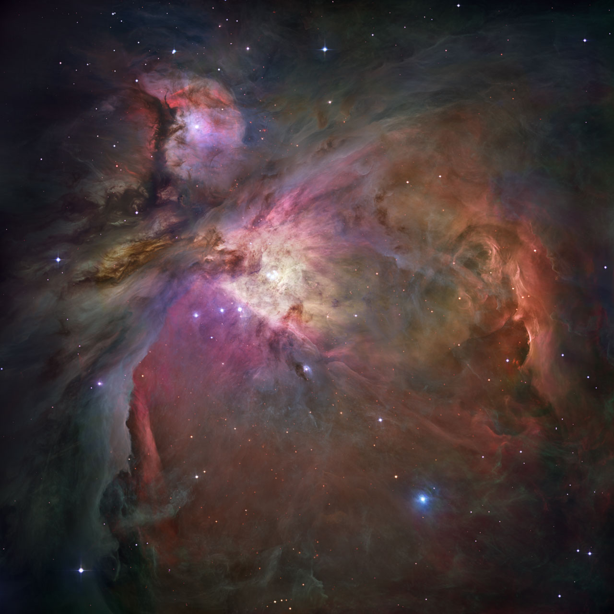

An O-type star is the hottest and most luminous class of star in the standard OBAFGKM spectral sequence, with surface temperatures between approximately 30,000 K and 52,000 K, masses of at least 16 solar masses, and luminosities reaching up to one million times that of the Sun. They are extraordinarily rare — only about 1 in 3,000,000 nearby main-sequence stars is an O-type — yet their extreme luminosity means that 4 of the 90 brightest stars visible from Earth belong to this class. O-type stars sit at the blue extreme of the Hertzsprung–Russell diagram and emit the bulk of their energy in the ultraviolet.

NASA, ESA, M. Robberto (Space Telescope Science Institute/ESA) and the Hubble Space Telescope Orion Treasury Project Team
Spectral features. The defining characteristic of O-type spectra is strong absorption — and in evolved objects, emission — of singly ionised helium (He II), particularly the line at 4686 Å. Ionised metal lines of silicon, oxygen, nitrogen, and carbon are also prominent in the blue-ultraviolet. Neutral helium (He I) lines are present and strengthen progressively from the hottest sub-types (O2) toward the coolest (O9.7), while hydrogen Balmer lines are weaker than in B-type stars. Stars carrying an “Of” designation display nitrogen and helium emission lines, marking evolved objects with enhanced mass loss that grade continuously toward Wolf–Rayet spectra.
Sub-types and luminosity classes. The sub-type sequence runs from O2 (hottest, ~50,000 K) through O9.7 (~30,000 K), with O7 serving as the anchor where the He II λ4541 and He I λ4471 lines are of equal strength. Luminosity classes follow the Morgan–Keenan system: V (main-sequence dwarf), III (giant), and I or Ia (supergiant). Additional suffixes flag physical peculiarities — “f” for nitrogen and helium emission, “n” for rapid rotation causing broad lines, “p” for spectral peculiarities, and “Vz” for extremely young dwarfs near the zero-age main sequence.
Rarity and environment. Approximately 20,000 O-type stars exist in the entire Milky Way, concentrated almost exclusively in the spiral arms within giant molecular clouds and HII regions. They aggregate into OB associations — loose, gravitationally unbound groups spanning hundreds of light-years — of which Orion OB1, Cygnus OB2, and Scorpius–Centaurus are well-known examples.
Role in the interstellar medium. The intense ultraviolet flux from O-type stars photoionizes surrounding hydrogen gas, creating HII regions; a single O star can sustain an ionized Strömgren sphere many parsecs across. Their stellar winds, reaching speeds of up to 2,500 km/s with mass-loss rates of 10−6–10−5 solar masses per year, inject kinetic energy into the interstellar medium, sweep out cavities, and can trigger further star formation by compressing adjacent molecular gas.
Evolution and endpoints. O-type stars burn hydrogen via the CNO cycle so rapidly that their main-sequence lifetimes are the shortest of any stellar class — less than 1 Myr for the most massive, up to about 10 Myr for the least massive O-types. After core hydrogen exhaustion, lower-mass O stars (~16–30 M☉) expand into red supergiants and explode as core-collapse supernovae, leaving neutron stars. Very massive O stars (above ~60 M☉) shed their envelopes through stellar winds, passing through luminous blue variable and Wolf–Rayet phases before a supernova that typically leaves a black hole. Because all O-type stars are geologically young, they serve as tracers of current and recent star formation.
Notable examples. Theta1 Orionis C (O6Vp), the dominant member of the Trapezium cluster, has a mass of 33 M☉ and a temperature of 39,000 K; it ionizes most of the Orion Nebula and was the first O-type star found to possess a magnetic field, detected in 2002. Zeta Puppis (O4Ifn) is a classic O supergiant with a temperature of ~40,000 K, a luminosity of ~447,000 L☉, and a stellar wind losing more than 10−6 solar masses per year at 2,500 km/s.
Historical classification. The OBAFGKM sequence grew out of the Harvard spectral survey. Williamina Fleming classified the initial large stellar catalogue using the original Draper lettered system; Annie Jump Cannon established the modern sub-type system by 1901. The two-dimensional Morgan–Keenan (MK) classification system, introduced in 1943, added luminosity classes. The original MKK scheme covered only sub-types O5–O9.5; the sequence was extended to O4 in 1978 and to O2 in more recent decades as the hottest objects were better characterised. The traditional mnemonic is “Oh, Be A Fine Girl: Kiss Me!”, placing O at the hot end of the sequence.
See also: B-type star, spectral classification, Hertzsprung–Russell diagram, Wolf–Rayet star, stellar evolution, HII region, OB association, supernova.